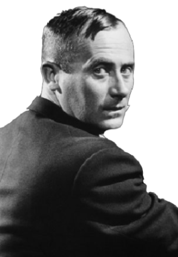

Joan Miró i Ferrà nace en Barcelona el 20 de abril en Barcelona, Palma. Fue pintor, escultor, grabador y ceramista. Y además uno de los pioneros de eso que se llamó surrealismo,Estudió comercio y trabajó durante dos años como dependiente en una droguería, hasta que una enfermedad le obligó a retirarse durante un largo periodo en una casa familiar en el pequeño pueblo de Mont-roig del Camp.A día de hoy está considerado uno de los artistas más importantes del siglo XX a nivel mundial: su influencia trasciende la propia de las artes plásticas y se plasma en campos como el diseño gráfico y la publicidad.
Para Joan Miró el subconsciente era un enorme campo de juegos, o un juguete muy parecido a los que tuvo en su infancia. tiene una gran fijación con la infancia y cómo expresarla. Al IGual que muchos otros artistas de la vanguardia presenta en su primera obra fuertes influencias del fauvismo, cubismo y expresionismo.
Su padre era orfebre y relojero, y su abuelo era un ebanista mallorquín. Los primeros dibujos realizados por Miró de los que se tiene noticia datan de 1901, cuando el artista contaba tan solo con 8 años de edad. Durante su formación, Miró compagina los estudios de comercio con los de Bellas Artes en 1910 entra a trabajar como contable en un negocio de droguería.
Conoció a Picasso, Max Jacob, André Masson, Ernst Hemingway, André Breton y Paul Éluard y algunos miembros de la corriente dadaísta, como Tristan Tzara como en la colaboración que realizó con Max Ernst. Alternó nuevas estancias en la capital francesa con veranos en Mont-roig y su pintura empezó a evolucionar.
En 1924 firma el Manifiesto Surrealista e incorpora a su obra formas infantiles automáticas y signos caligráficos.e incorporó a su obra inquietudes propias de dicho movimiento, como el jeroglífico y el signo caligráfico (El carnaval del arlequín). La otra gran influencia de la época vendría de la mano de Paul Klee, del que recogería el gusto por la configuración lineal y la recreación de atmósferas etéreas y matizados campos cromáticos.
Forma en ese tiempo su carrera como escultor, tiene un pasaje entre materiales con metales, producciones con objetos abstractos, cerámica, hormigón y piedras, mármol.
En 1975 se inaugura la Fundación Miró de Barcelona, encargada de gestionar y difundir el legado del artista. Miró continúa trabajando hasta sus últimos años y fallece en 1983 a los noventa años de edad, considerado ya uno de los mejores artistas plásticos del siglo XX.
